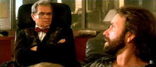

| Skin Deep/ C+, B |
| Warner/1989/101/ANA 2.35 |
Watching Skin Deep, you can't help wondering,
is this supposed to be a comedy?. It's not a black comedy. It's not
slapstick. It's not satiric. It's a sad drama. Is that the intention?
Throw up a coin. Skin Deep is simply pathetic. The alcoholic
elements are actually very painful. Is philandering boozer Zack a
redeemable character? Not at all. Zack's lack is an inescapable weakness
of Skin Deep. His womanizing isn't very funny. Yes, in the
beginning it has possibilities, but it gets tired far too soon.
Can an audience bear up under the pressure of
watching Zack bed an endless variety of women, are there laughs buried
underneath his boorish behavior? The bar scenes and the psychiatrist
scenes are simply a bore. There are mirthful moments at Zack's house: the
dead dog is funny, but there just is not enough humor, not enough human
drama, only the pervasive alcohol.
John Ritter is very good good as Zack.
Unfortunately, the character fails to invest its audience with any emotion
currency. He's so disagreeable. Tough to light up the screen with a burnt
out light bulb. Maybe this is a companion piece to Days of Wine and
Roses, another Edwards directed film about alcoholism and a very
powerful film indeed? Is it possible that audiences, studio PR machines,
completely misread this film? That begs the question, does it work as a
drama discounting those comedy expectations. Thumbs down.
If you go into a film thinking its a comedy, when
do you get the clue. You have to get hooked in the right way by the
filmmaker, otherwise, it's uphill all the way to engage your audience.
 |
|
Too many couch scenes. ©Warner
|
Skin Deep is a solid DVD transfer. Elements
are clean the DVD has a very consistent look. Black levels are fine. It's
mostly sharp. There a few moderately soft scenes. Flesh tones are good.
Color saturation is very solid. Contrast range has plenty of pop and
overall light output is excellent. Remastered Dolby Digital 5:1 sound is
delivered cleanly. |
|
|
|

Selections from the Feature
Archive include articles on Akira Kurosawa, Blonde Bimbos, Frank Darabont, Steven Culp, John Herzfeld or Vietnam: The Hollywood Pariah, and many
more....

The Academy of Motion Picture Arts Sciences and has a soft spot reserved
for peers taking on the battle of the bottle. Click on the bottle to learn
more about the magic of Oscar® Formula One.

The Movie Poster Archive
include extensive poster images from the films of stars like Susan
Hayward, Kirk Douglas, Katharine Hepburn and many more. Our featured
star is Robert Mitchum

Searchers, The/ A,B

John Wayne invests Ethan Edwards with enormous dignity and determination.
A classic western from director John Ford. Mesmerizingly beautiful.
 
DVD Dimensions sells DVDs from an easy to use online interface.

Timely DVD reviews and an easy-to-use interface. Weekly
contests.

A new entry in the 2001 home theater site sweepstakes. Chief focus on
hardware reviews with a smattering of software.
|